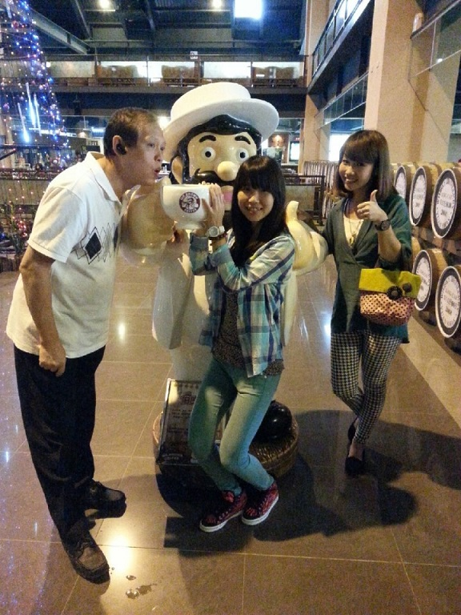
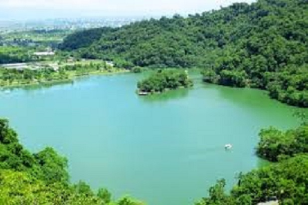
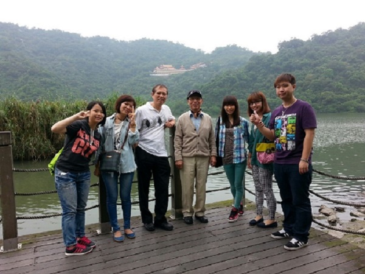
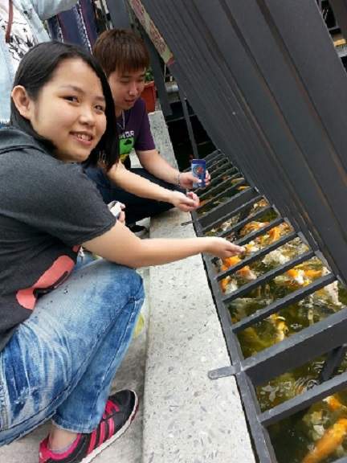
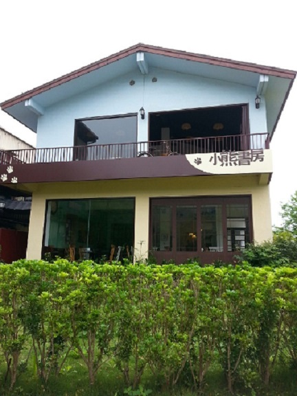
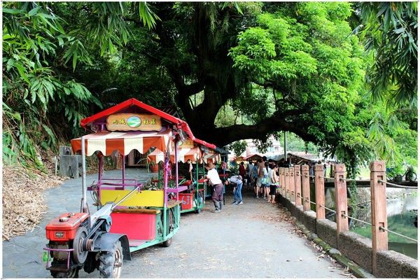
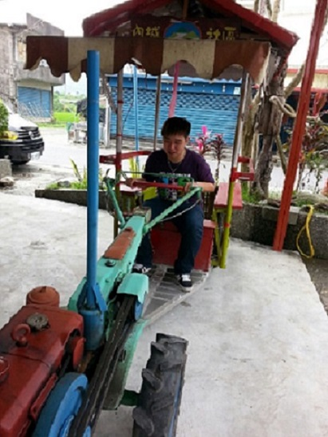
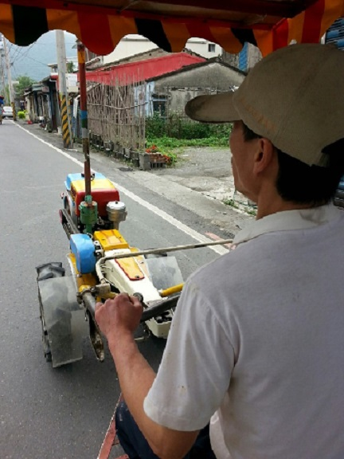

這天一大早，因為爸爸要上班，所以只有外公、媽媽、妹妹、二舅舅、堂姊、堂哥還有我，一起展開了我們的宜蘭一日遊，第一站去了宜蘭伯朗咖啡館。
裡面當然有賣伴手禮，還有座位可以坐著聊天喝下午茶，而且旁邊就是海景，還有很多拍照的好地方。。
離開了伯朗咖啡館之後，我們去了位在冬山鄉的梅花湖，那裏不但景色優美，空氣也非常的清新，跟台北的空氣實在是天差地遠。。
除了三面環山之外，還有可以餵魚、坐船、騎腳踏車……休閒活動！
這是在梅花湖餵魚的照片，只要人一靠過去，魚群就會全部接近，旁邊也又賣魚飼料，一盒10元。
在梅花湖中，會有一間小木屋佇立在那，那就是吳淡如開的店，叫做小熊書房，但是我們去還太早了，所以還沒開始營業。
  最後一站我們去了員山鄉內城社區，這裡有鐵馬可以帶我們繞整個社區，而且會在各個景點區停下來讓我們拍照和走走，其中最有名的是百年茄苳老樹，於是宜蘭一日遊就在此畫下句點。